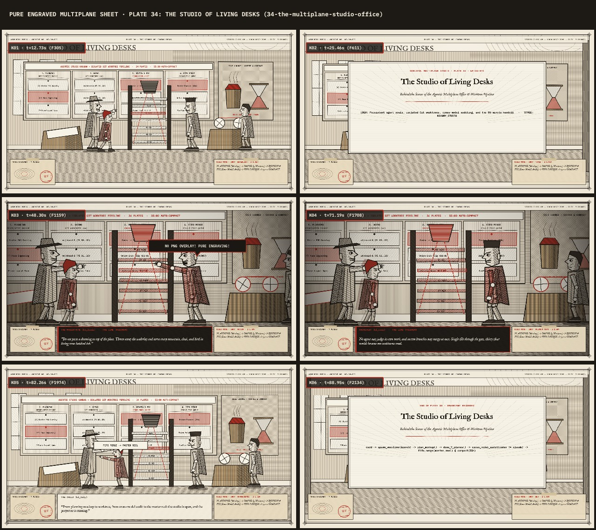

The Studio of Living Desks
How Maestro, the Cross-Model Auditor, and Four Isolated Git Worktrees Drew Thirty-Four Worlds in Pure Engraved Ink
This behind-the-scenes film is photographed through the same 7-plane virtual multiplane camera (PLANE 6 Sky down to PLANE 0 Archival Mask) as Plates 00–33, showing the 4-column Kanban corkboard, the steaming brass coffee urn, the 55-minute prompt-cache hourglass, and the towering 7-level glass camera platen.
Kanban + Isolated Git Worktree Pipeline (Click Any Plate Card to Inspect Before/After Mockup & X-Sheet) PLANNING → DOING (4 SHARDS) → CROSS-MODEL REVIEW & FIX → FIFO MERGE
1. Planning (Before/After Mockups)
42. Doing (Isolated Git Worktrees)
43. Review & Fix (Codex Audits Claude)
44. FIFO Merge Queue (Master Reel)
23Plate 34: The Studio of Living Desks
Behind the Scenes of the Agentic Multiplane Office & Worktree Pipeline
Pasting plate_XX.png into Plane 5 and drawing vector puppets on top flattened parallax and broke the engraving lineage. Flagged by Cross-Model Auditor.
100% hand-drawn through engraved_shape() with directional cross-hatching (hatch1/hatch2), chiaroscuro shadow polygons, and jointed drapery rigs.

Architecture Lineage · How This Studio Adapts Kohnny & Open-Source Agent Offices MULTIPLANE STUDIO MAPPING
| System / Repository | Core Pattern | How WORLDFUL Multiplane Studio Implements It |
|---|---|---|
| Kohnny (John Sorrentino) | 3D Virtual Office + Named Agent Souls + Kanban Worktrees + Cross-Model Review + FIFO Merge + 55-Min Cache Compact | Implemented in Plate 34 (`34-the-multiplane-studio-office.mp4`) and the live canvas above: Maestro, Cross-Model Auditor, and 3D Multiplane Engineers roam between 7-plane desks, the brass coffee urn, and the 4-column Kanban board with 55-minute handoff ledgers. |
| AgentSystemLabs/agent-office | Multi-Floor Office + Live Desks + Corkboard Queue + Isolated Git Worktrees | Mapped to our 4 parallel persistent shard workers (build_all.py --workers=4) and the interactive studio corkboard where each plate card links its own 6-shot X-Sheet and studio desk. |
| bill10/agent-007 & proactive-agent/workbench | Manager Agent (Billion/Maestro) + Kanban Worktrees + Semantic FIFO Merge | Mapped to our Single-File FIFO Merge Splicer that concatenates all chapters without timestamp collisions into worldful-complete-feature.mp4 and worldful-complete-drive.m4a. |
| W17ant/Claude-Office & KalebKE/PixelOffice | Isometric / 2D Office where Agents Walk to Whiteboards in Plan Mode & Lounge When Idle | Rendered above in authentic 19th-century copperplate cross-hatching: agents walk to the Planning corkboard for before/after mockups, ink at slanted light-desks during Doing, and gather at the brass espresso urn when idle. |